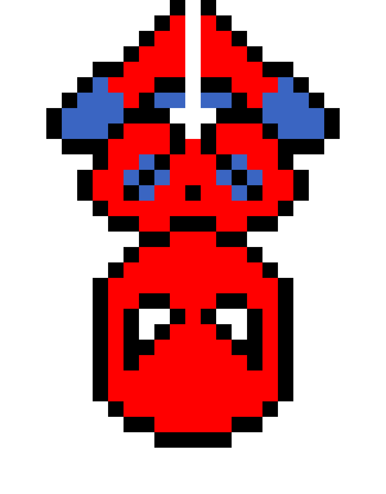

Hi, I'm Faraz Tariq_
Software Developer | Building practical automation, data, and web solutions
About Me
I'm a Computer Science & Data Science graduate with hands-on experience in software development, API integrations, data pipelines, automation, and operational reporting.
Beyond Code
Sports Enthusiast
Whether it's playing or watching, I enjoy staying active and following my favorite teams.

Comic Book Fan
I love exploring stories and characters across Marvel, DC, and indie universes.
Gamer at Heart
From strategy to open-world adventures, games fuel my curiosity and problem-solving skills.